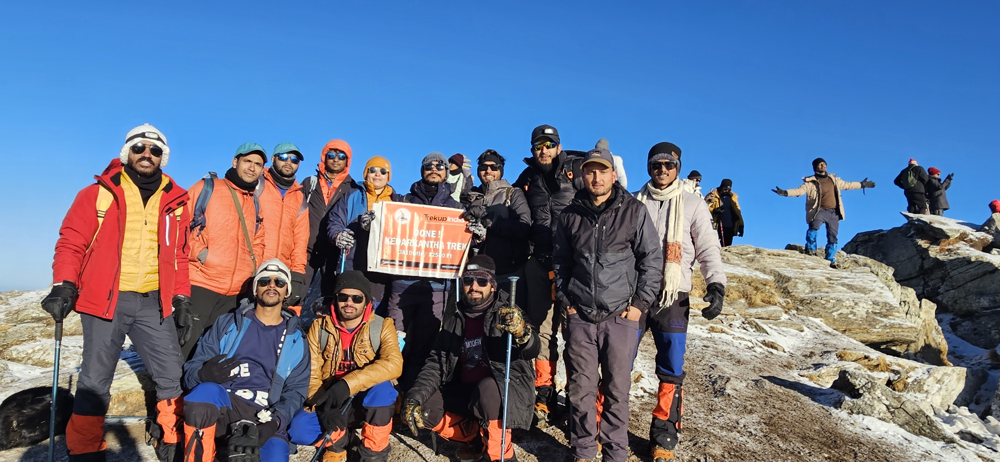

My Journey
This journey began not in the snow, but in the warm deserts of Rajasthan — my home. With excitement in my heart and adventure on my mind, I packed my bag and began this trek as a solo traveler. My first destination was Delhi, a bustling city where my mountain dreams started to take real shape. From Delhi, I took a long journey to Dehradun, the gateway to the Himalayas. The thrill was building up. I had booked my trek through a reputed trekking company, and once I reached Dehradun, their team warmly received me. I was no longer alone. From Dehradun onwards, everything started to feel more real. It was there that I met a bunch of fellow trekkers — strangers at first, but their energy and warmth made it feel like I had known them for years. We were all part of the same trekking batch, and our journey toward the mountains had just begun. People from different corners of the country had gathered here, united by the same dream — to reach the summit of Kedarkantha. Among them were some amazing people: Nirupam, Shubham, Saurabh, Krishna, Dipali and many others. From that moment on, we were not just trekking companions — we were a team. A team that laughed together, struggled together, and lifted each other up through every challenge.

A Moment Etched in Time
On 12th February 2025 at exactly 7:10 AM, I stood at the summit of Kedarkantha, surrounded by snow-covered peaks, crisp mountain air, and the most breathtaking sunrise I’ve ever witnessed. That moment was not just a picture-perfect frame — it was a snapshot of courage, persistence, and triumph. I remember the silence. No noise, no distractions — just the whisper of wind and the crackle of snow under my boots. Looking down at the world from 12,500 ft, I didn’t just feel proud. I felt free.
The Challenge Behind the Beauty
This journey was far from easy. Every step uphill demanded effort, especially in sub-zero temperatures. My body hurt, my breath shortened, and at times my mind wavered. But I kept reminding myself — “You are not just climbing a mountain. You are climbing a mindset.” What kept me going? The dream of that summit. The unwavering support of my trekking team. And the voice inside me that kept saying, “You can.”
Lessons the Mountains Taught Me
- Limits are illusions — we break them by showing up, again and again.
- Preparation is everything — physical training, mental clarity, the right gear.
- Community matters — we rise by lifting each other.
- Nature heals — no therapy like sitting quietly on a snowy ridge, watching the world turn golden at sunrise.
Friendship on the Mountain
Trekking may look like a solo journey from the outside, but on the inside — it's a bond-building experience like no other. On this journey, I had the privilege of meeting some of the most amazing and inspiring individuals. We weren’t just climbing a mountain — we were building memories that would last a lifetime. Some names that will always stay close to my heart from this trek: Nirupam, Shubham, Saurabh, Krishna, Dipali. We supported each other, laughed together in the coldest of moments, and stood side-by-side as we watched the sun rise from 12,500 ft. The summit wasn’t just mine — it was ours.
